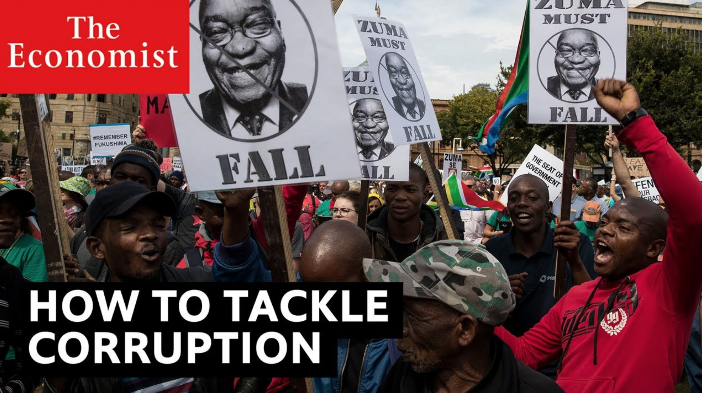

2020-12-11T09:03:57+00:00
经济学人视频
颠覆者系列 | 大数据反腐：南非
在雅各布•祖玛的九年总统任期内，腐败现象席卷了全国。仅在他的第二任期内，就有约1000亿美元遭窃取。南非人民要求改变，于2019年选出了明确以反腐为纲领的新总统。
2020-12-11T09:03:57+00:00
The Economist Film
Disrupting Corruption 1 - South Africa
During the nine-year presidency of Jacob Zuma, corruption captured the state. In Zuma’s second term alone, about a hundred billion US dollars was stolen just short of a third of South Africa’s GDP. But South Africans demanded change and in 2019 they elected a new president on an explicit platform to crack down on corruption.
2020-12-11T09:03:57+00:00
經濟學人視頻
顛覆者系列 | 大數據反腐：南非
在雅各布•祖瑪的九年總統任期內，腐敗現象席捲了全國。僅在他的第二任期內，就有約1000億美元遭竊取。南非人民要求改變，於2019年選出了明確以反腐為綱領的新總統。